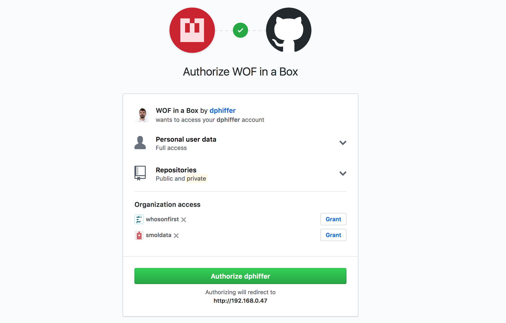
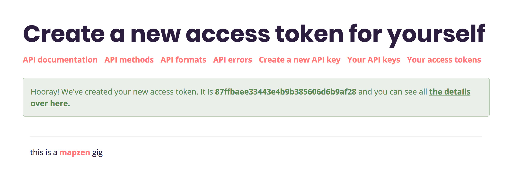
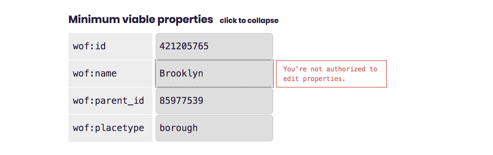
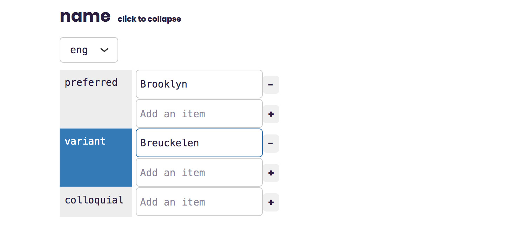
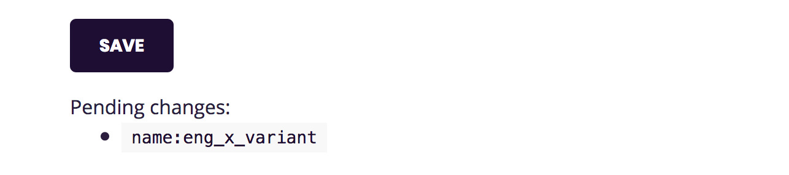

This is the second of the two part guide to running Who’s On First tools on your own hardware. You may want to read part 1 first.
Before we jump into installing the Who’s On First REST API and editor , let’s briefly take stock of what we have running from the first part of this guide.
- We have a git repo of WOF administrative data
- Incoming web requests get proxied by nginx
- We can explore the data with our own installation of the WOF Spelunker
Some of the stuff we set up in part one, like Elasticsearch and nginx, are dependencies for this second part of the stack too.

These next parts we’re setting up run on a LAMP stack , each built with Flamework, a set of libraries and conventions originally created for the Flickr back-end. It still works just fine, although you can find some crufty bits if you poke around.
The two remaining web apps exist separately for now, but could very well be combined into a single codebase at some point in the future. The diagram shown above is rather simplified, and reflects a slight adjustment from the plan in the first part of this guide. Instead of API requests getting routed through
/api
, we will use the top-level
/
path.
The Who’s On First documentation we used to have at the top-level
/
path is still
available online
, if not on your NUC.
Getting the time right
Before we start, there is one minor change from how we set up the server in part one of the guide. During the Ubuntu server setup I mentioned that I just accept the defaults except for a handful important changes. One important change that I left out was to set the server’s timezone to UTC (Coordinated Universal Time) .
We can easily revisit that step in the setup menu.
sudo dpkg-reconfigure tzdata
Then choose None of the above , then UTC . Then select Ok .
Let’s err on the side of caution and install some software to ensure the server has the most up-to-date time set.
sudo apt-get update
sudo apt-get install -y ntpdate
Now we can update the time from the National Institute of Standards and Technology .
sudo ntpdate time.nist.gov
With that settled, let’s continue.
Setting up the API
Okay, let’s begin setting up the API. I’m going to assume you’re already SSH’d into the NUC machine.
cd /usr/local/mapzen
git clone https://github.com/whosonfirst/whosonfirst-www-api.git
Much of the API’s setup process is automated, but if you look inside the Makefile you can inspect each step in detail.
Since we are proxying requests with nginx, we will set things up without SSL support (for now).
cd /usr/local/mapzen/whosonfirst-www-api
make setup-nossl
You may be prompted for your password for
sudo
. You will also be asked to confirm that you want to install unattended upgrades (Yes) and which updates to install (the default is fine). Finally, you will choose a MySQL root password (and confirm it), then enter it once more to set up the database schema.
When all of this finishes your API setup will almost be in working order. Some things you should know about how the stack is set up:
-
The API’s Apache configuration is symlinked from
whosonfirst-www-api/config/whosonfirst-www-api-apache.conf -
The database is called
wof_apiand is accessed by userwof_api -
All passwords and tokens are stored in
www/include/secrets.php -
You will learn a lot by reading
www/.htaccess -
There’s also a great number of configuration tweaks contained in
www/include/config.php(the convention is to set overrides in a separate file, we’ll get to that down below)
Configuring Apache
We still need to adjust a couple configurations in Apache, to make the API run on port 8888.
cd /usr/local/mapzen/whosonfirst-www-api
nano config/whosonfirst-www-api-apache.conf
Edit the first line to use port 8888:
<VirtualHost *:8888>
Next, edit Apache’s
ports.conf
.
sudo nano /etc/apache2/ports.conf
We’re instructing Apache to listen on 8888 and also 9999 (for Boundary Issues). We can get rid of the existing configurations for port 80 and 443. Those ports are handled by nginx.
Listen 0.0.0.0:8888 # API
Listen 0.0.0.0:9999 # Boundary Issues
Let’s restart Apache and check to make sure we can reach port 8888.
sudo service apache2 restart
curl -I http://localhost:8888/
If you see
HTTP/1.1 200 OK
then you are in good shape.
GitHub OAuth application
We use GitHub’s OAuth mechanism to authenticate users. We will need to set some things up at GitHub in order for that to work.
- Go to GitHub’s Developer settings and navigate to OAuth Apps
- Click the New OAuth App button
-
Enter an Application Name (
WOF in a Boxis a good choice) -
For the Homepage URL, enter your server’s IP address, for example
http://192.168.0.47/ -
The Authorization callback URL is similar to the Homepage URL, but with an
/authpath suffix, e.g.,http://192.168.0.47/auth - Click the Register Application button

Edit
/usr/local/mapzen/whosonfirst-www-api/www/include/secrets.php
and copy/paste the GitHub OAuth tokens using the following configurations. You’ll want to add this just before
# the end
.
$GLOBALS['cfg']['github_oauth_key'] = '(your client ID)';
$GLOBALS['cfg']['github_oauth_secret'] = '(your client secret)';
Secret hashes
While we’re looking at this file, check to see if the first three configurations are set. If they have values like
You must set cfg.crypto_password_secret
that means we need to set them still. These are used for things like cookie sessions, passwords, and
CSRF
-deterrent crumbs.
Generate a new secret hash for each of the three configurations, using the following script:
cd /usr/local/mapzen/whosonfirst-www-api
php bin/generate_secret.php
php bin/generate_secret.php
php bin/generate_secret.php
Those hashes get copied into
secrets.php
like this (your hashes will be different):
$GLOBALS['cfg']['crypto_cookie_secret'] = 'lfMi9sHoC2gnFKmMBgG8wUWqvqWO80eq';
$GLOBALS['cfg']['crypto_password_secret'] = 'afEp7fVgVe7TeO07jhud1y9opqgmhsmy';
$GLOBALS['cfg']['crypto_crumb_secret'] = 'u73GlqrDxqBOriFK921H8a0OsT8YZExz';
Configuring nginx
Before we can test everything, we will need to make one last adjustment to the nginx config. Instead of routing traffic from
/api
to port 8888, we will send everything from the top level
/
path.
sudo nano /etc/nginx/sites-enabled/whosonfirst
First, delete this block:
location / {
try_files $uri $uri/ =404;
}
Then modify the API block to use
/
instead of
/api
. Notice there are two places that need editing, the
location /
part and the
proxy_set_header X-Proxy-Path /
part.
location / {
proxy_pass http://localhost:8888;
proxy_set_header Host $http_host;
proxy_set_header X-Forwarded-For $proxy_add_x_forwarded_for;
proxy_set_header X-Scheme $scheme;
proxy_set_header X-Proxy-Path /;
}
Let’s restart nginx to make those configurations take effect.
sudo service nginx restart
Logging in with GitHub
There is one last configuration we need to make for all of this to run on plain vanilla HTTP. It’s not so much that we wouldn’t want to run on HTTPS, just that we would need a public hostname, or a self-signed certificate.
If file
config_local.php
exists, it gets loaded in to override the default values defined in
config.php
.
cd /usr/local/mapzen/whosonfirst-www-api
nano www/include/config_local.php
Add the following to disable HTTPS and, while we’re in here, use the right Elasticsearch index:
<?php
$GLOBALS['cfg']['server_force_https'] = 0;
$GLOBALS['cfg']['api_require_ssl'] = 0;
$GLOBALS['cfg']['elasticsearch_spelunker_index'] = 'spelunker';
We don’t need a trailing
?>
since it is optional, and can lead to
unexpected side-effects
.
Save your
config_local.php
configuration, and then load up your WOF in a Box’s IP address (something like
http://192.168.0.47/
) in a browser.
In the top-right corner, choose Sign In from the drop-down menu labeled You .

GitHub will ask for permission to authenticate you with the OAuth application you just set up. Click the green button to login.

You should get redirected back to the WOF in a Box homepage. If all goes well you should see your name appear in the top-right drop-down menu. You have been OAuth’d by GitHub.
Create an access token
Go to the to-right drop-down menu and choose Developer . From here you can explore some of the API methods available, and configure OAuth access.
Click on Your Access Tokens , then Create a new access token for yourself .
Give your token a name (“WOF in a Box” is a safe choice), permissions (“Read” is good), and expiration (“until I revoke it”).
Then you have to click one more I agree! checkbox and you should be set.

You should see a green “hooray” message, with a hexidecimal token for you to copy/paste.

For the sake of having a realistic looking example token, we’ll go with
87ffbaee33443e4b9b385606d6b9af28
, but yours will be different.
Accessing the API
If you navigate to the API methods section of the Developer pages, you can try out some of the methods using the web-based API explorer.
Let’s try calling some API methods using
curl
.
curl -s "http://192.168.0.47/api/rest/?method=api.test.echo&access_token=87ffbaee33443e4b9b385606d6b9af28" | jq
You should see the following result:
{
"method": "api.test.echo",
"access_token": "87ffbaee33443e4b9b385606d6b9af28",
"stat": "ok"
}
We can use a shell variable to store the IP address and access token, which should make the examples easier to copy/paste. Note, again, that your own IP and token will be different.
wof_api="http://192.168.0.47"
wof_token="87ffbaee33443e4b9b385606d6b9af28"
Now we should be able to test out the REST API. Let’s get a list of all the API method names.
curl -s "$wof_api/api/rest/?method=api.spec.methods&access_token=$wof_token" | jq "[ .methods[].name ]"
Let’s load up some info about a specific WOF record.
curl -s "$wof_api/api/rest/?method=whosonfirst.places.getInfo&id=102030609&access_token=$wof_token" | jq
You should see a record for Mumbai .
One last example, all the microhoods in San Francisco :
curl -s "$wof_api/api/rest/?method=whosonfirst.places.getDescendants&id=85922583&placetype=microhood&access_token=$wof_token" | jq '[ .places[]["wof:name"] ]'
You should take some time to explore the API documentation, and try out the standalone API Explorer desktop app . It has a settings pane that lets you change the API endpoint, so you can test out requests against your own WOF in a Box rig.
Important note: not all of the API methods will work for you at this point. We need some additional software for spatial queries and an additional Elasticsearch index for brands to work. Those can be subjects of some future WOF guide.

Setting up Boundary Issues
We are in the home stretch. The final part of the stack is our bespoke web-based WOF editor , called Boundary Issues . It has a similar setup process as the API.
cd /usr/local/mapzen
git clone https://github.com/whosonfirst/whosonfirst-www-boundaryissues.git
Like the API, much of the setup has been automated with a Makefile to run a sequence of shell scripts. And as with the API, we will set things up without HTTPS, since we’re proxying requests through nginx.
cd /usr/local/mapzen/whosonfirst-www-boundaryissues
make setup-nossl
You will be prompted for your
sudo
password, and then for the MySQL root password.
There is a second set of installation scripts that install everything required for offline tasks. The offline task functionality was designed to be an optional add-on to Boundary Issues, so it gets installed with a separate Makefile target.
make setup-offline
Most of the offline task dependencies are pulled in from modular single-purpose Flamework repos that take care of setting up each of:
You may notice the process of setting up
gearman
has an exceptionally large set of dependencies. This is the unfortunate consequence of
apt-get install gearman
not working in Ubuntu 16.04. Instead we install a few low-level dependencies and then build it
from source
. The process is automated by a shell script, so you shouldn’t have to type anything extra, but you will notice a whole lot more scrolling by.
Also, for some reason
logstash
doesn’t get validated during its installation, so you will need to manually confirm that you’re okay with that.
Once all that finishes, things will be set up similarly to the API:
-
The API’s Apache configuration is symlinked from
whosonfirst-www-boundaryissues/config/whosonfirst-www-boundaryissues-apache.conf -
The database is called
boundaryissuesand is accessed by userboundaryissues -
All passwords and tokens are stored in
www/include/secrets.php -
Reading the bottom part of
www/.htaccesswill show you all the URL path routing logic -
There’s also an awful lot of configuration tweaks contained in
www/include/config.php(we’ll set some overrides in aconfig_local.phpdown below)
Configuring Apache (again)
Like with the API, we need to adjust a couple configurations to make Boundary Issues run on port 9999.
cd /usr/local/mapzen/whosonfirst-www-boundaryissues
nano config/whosonfirst-www-boundaryissues-apache.conf
Edit the first line to use port 9999:
<VirtualHost *:9999>
Also, add this additional config after the
DocumentRoot
part, to get the
/boundaryissues
path to work properly:
Alias /boundaryissues /usr/local/mapzen/whosonfirst-www-boundaryissues/www
We already took care of
/etc/apache2/ports.conf
earlier, so we can just restart Apache and check to make sure we can reach port 9999.
sudo service apache2 restart
curl -I http://localhost:9999/
If you see
HTTP/1.1 200 OK
then take a moment to celebrate quietly before we move on.
Indexing Elasticsearch (again)
One of the quirks about the Who’s On First ecosystem is that Boundary Issues and the Spelunker run on separate Elasticsearch indexes. This was intended to reduce the likelihood of accidentally screwing up live data in the Spelunker. We may combine them at some point, but for now it means we have some more schemas and indexing to take care of.
Let’s start with the schemas, yes plural. Boundary Issues uses three of them! I’m assuming we already did all the other Elasticsearch setup from part one of the guide.
cd /usr/local/mapzen/es-whosonfirst-schema
cat schema/2.4/mappings.boundaryissues.json | curl -X PUT http://localhost:9200/boundaryissues_20171229 -d @-
curl -X POST http://localhost:9200/_aliases -d '{ "actions": [ { "add": { "alias": "boundaryissues", "index": "boundaryissues_20171229" } } ] }'
cat schema/2.4/mappings.offline_tasks.json | curl -X PUT http://localhost:9200/offline_tasks_20171229 -d @-
curl -X POST http://localhost:9200/_aliases -d '{ "actions": [ { "add": { "alias": "offline_tasks", "index": "offline_tasks_20171229" } } ] }'
cat schema/2.4/mappings.audit_trail.json | curl -X PUT http://localhost:9200/audit_trail_20171229 -d @-
curl -X POST http://localhost:9200/_aliases -d '{ "actions": [ { "add": { "alias": "audit_trail", "index": "audit_trail_20171229" } } ] }'
That’s a whole lot of schemas and aliases. Basically what we did was set up three new indexes, aliased to make future upgrades easier:
-
boundaryissuesaliased toboundaryissues_20171229 -
offline_tasksaliased tooffline_tasks_20171229 -
audit_trailaliased toaudit_trail_20171229
Now we can start the process of indexing the WOF records into the
boundaryissues
index. As with the Spelunker’s Elasticsearch index, this will take some time to finish, so you may want to use
screen
for it.
cd /usr/local/data/whosonfirst-data
wof-es-index -s . --index=boundaryissues -b
Let that run in the background while we finish up the rest of the Boundary Issues setup.
Secret hashes and GitHub OAuth (again again)
Okay, so a lot of what’s below may seem familiar after setting up the API. And I know you are eager to start editing WOF records. We are getting there!

Unfortunately, because the API and Boundary Issues are separate apps, we need to set up a second GitHub OAuth application to handle redirects properly.
- Go to GitHub’s Developer settings and click the New OAuth App button
-
Enter another Application Name (
Boundary Issues in a Boxis a good choice) -
For the Homepage URL, enter your server’s IP address, for example
http://192.168.0.47/boundaryissues -
The Authorization callback URL is similar to the Homepage URL, but with an
/authpath suffix, e.g.,http://192.168.0.47/boundaryissues/auth - Click the Register Application button
Now let’s open up
secrets.php
and insert those GitHub OAuth credentials.
$GLOBALS['cfg']['github_oauth_key'] = '(your client ID)';
$GLOBALS['cfg']['github_oauth_secret'] = '(your client secret)';
Next we’ll generate three new secret hashes, for the crypto hash configs:
cd /usr/local/mapzen/whosonfirst-www-boundaryissues
php bin/generate_secret.php
php bin/generate_secret.php
php bin/generate_secret.php
Those hashes get copied into
secrets.php
like this (your hashes will be different):
$GLOBALS['cfg']['crypto_cookie_secret'] = '9NBEy7d484AN3muSObRPsicoQIpjrhxQ';
$GLOBALS['cfg']['crypto_password_secret'] = 'HRoQz6jcuCB6lHhSmOhlWmfH3X7Nw9xa';
$GLOBALS['cfg']['crypto_crumb_secret'] = 'AxM2yCFsTwY9lVgyDUpJphrv4Qxf3gwI';
The pending folder
To accommodate the process of saving WOF records, we need to set up a www-writeable directory for incoming edits. It works kind of similarly to a Git index, with subfolders to keep the present edited state and a snapshot record of each edit.
The convention is to put the pending folder into the same structure as the other data repos.
sudo mkdir /usr/local/data/whosonfirst-pending
sudo chown www-data:www-data /usr/local/data/whosonfirst-pending
… and then symlink that into the Boundary Issues folder.
sudo ln -s /usr/local/data/whosonfirst-pending /usr/local/mapzen/whosonfirst-www-boundaryissues/pending
Let’s test things out
Now that we’ve set a whole bunch of Boundary Issues stuff… let’s maybe try it?
Go to
http://192.168.0.47/boundaryissues/
in a browser (again, with your IP subbed in), and see if it loads up. You should see something similar, but not quite the same as, the API’s homepage.

Click on the same You menu and then Sign in with GitHub . You should see a similar OAuth confirmation page on GitHub, and then redirect back to the Boundary Issues homepage.
Once you get redirected back, you will have to accept some terms before you can continue.

Let’s search for a record, for example Brooklyn .

You want to click on the one that’s a Borough placetype .

Okay now we are getting somewhere, although…

… by default, new users don’t have permissions to edit records.
Add a user role
One last setup task: we just need to add the role
admin
to your user account and you should be all set.
Here’s how that works (again, swap in the email address you used to sign up for your GitHub account):
cd /usr/local/mapzen/whosonfirst-www-boundaryissues
php bin/add_user_role.php your.email@example.com admin
You should be prompted with a confirmation (press
Y
or just press enter).
There is actually
another configuration
we should set, inside a new
config_local.php
file.
cd /usr/local/mapzen/whosonfirst-www-boundaryissues/www/include
nano config_local.php
This will make Boundary Issues update the Spelunker’s Elasticsearch index, upon saving.
<?php
$GLOBALS['cfg']['enable_feature_index_spelunker'] = 1;
And one more thing (I know, this is complicated), we need to make sure we have the offline tasks running, since they take care of saving stuff after you hit the Save button.
sudo /etc/init.d/gearmand start
sudo supervisorctl start all
Okay, now we should really be ready.
Edit a WOF record
Go back to the Edit Brooklyn page in Boundary Issues and reload it. You should be able to edit things now, yay!
Scroll down to the name section, and expand it open. Add the colonial name “Breuckelen” to the list of variant names (technically this should be under the Dutch language, not English, but one thing at a time).

Notice how the interface added a blue indicator next to the field? That helps you keep track of which things you’ve edited.

When you hit the save button, if all goes well, it should replace the list of changed properties with Saved . If it gets stuck on Saving… you may want to try again and keep an eye on the JavaScript console looking for error messages.
Finally, let’s try searching for updated name using the Spelunker.

Hooray, you made an edit and it showed up in the Spelunker. There is more to all of this that I won’t go into in this blog post. Right now all the changes you make end up in
/usr/local/data/whosonfirst-pending
, without modifying the actual WOF Git repos. If we wanted to actually upstream the changes to GitHub, we would need to set up a new user on the server (we tend to go with
botsonfirst
) with credentials to push up to GitHub. And that user would execute the script
bin/save_pending.php
on a cron job.
There is also the whole subject of pipeline tasks vs. offline tasks, but maybe you can ask me about that over a beer some day.

Bundler config
Okay one final set of config changes before we call it a day. The Spelunker has a very handy tool called the Bundler and we should get it working with our new WOF in a Box stack.
SSH into the NUC server and edit the flask config.
cd /usr/local/mapzen/whosonfirst-www-spelunker/config/
nano whosonfirst-www-spelunker-flask.cfg
We’ll make two edits here, the first enables the bundler feature:
enable_feature_bundler=1
The second will swap where the Spelunker looks for its WOF records from (once again, with your own IP swapped in):
data_root=https://192.168.0.47/data
There are a couple more edits to another config file:
mapzen.whosonfirst.config.js
cd /usr/local/mapzen/whosonfirst-www-spelunker/www/static/javascript/
nano mapzen.whosonfirst.config.js
We are going to scroll down to the bottom and edit this part:
if (mapzen.whosonfirst.api) {
mapzen.whosonfirst.api.set_endpoint('https://' + api_host + api_path);
mapzen.whosonfirst.api.set_key(api_key);
}
Change it so that it looks like this (remember the access token we generated for the API?):
if (mapzen.whosonfirst.api) {
mapzen.whosonfirst.api.set_endpoint('http://192.168.0.47/api/rest/');
mapzen.whosonfirst.api.set_token('87ffbaee33443e4b9b385606d6b9af28');
}
Note that we changed the
set_key
function call to
set_token
. This is an important difference.
Okay, now we can try it all out!
First, restart the Spelunker for the config changes to take effect.
sudo /etc/init.d/whosonfirst-www-spelunker.sh restart
Next, load up the Spelunker page for Brooklyn (or Breuckelen). The URL should be something like
http://192.168.0.47/spelunker/id/421205765/
.
Now, scroll down until you get to the “Other” links, below the Hierarchy.
You should see a new link for Download descendants of Brooklyn . Click on that.
If everything is working, you should now be able to bundle and download all the descendants records of Brooklyn, using the NUC’s API and data. Let’s try getting all the Brooklyn neighbourhoods.

That’s all, folks
That was a whole lotta WOF in a Box, thanks for reading this far!


){kind=link}